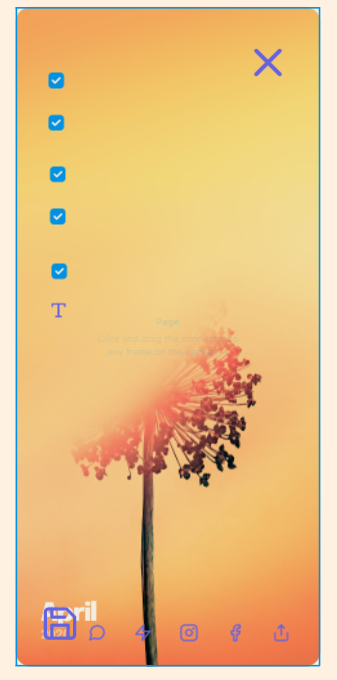
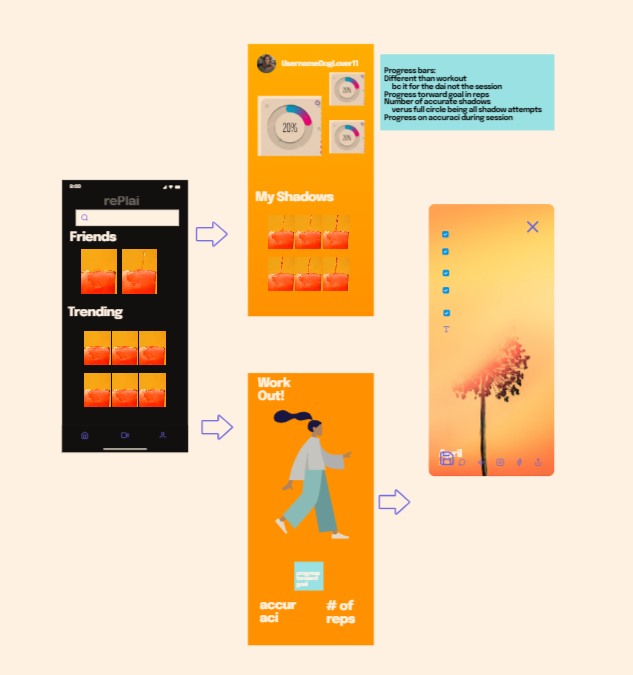

UI designs across different web browsers are now almost all uniform. They all have a search bar, tool bar, tabs bar, bookmark, and interface with a search engine. Users will have almost always the same experience across different browsers, nothing would be too unfamiliar or drastically different from the fundamentals.
Drop down tabs when browsing news groups design by type. Users will not find Global News under Entertainment section, so this way Users can find needed materials at a glance. No need to browse the entire newspaper or website to find a single column. Just look by topic.

Although Amazon boasts of enabling Users to order through Alexa and automated orders, they still use confirmation pages during checkout. This is a necessary step and cannot be avoided because Users have to enter necessary information like credit card, delivery address, and item amount before actually ordering. This step allows users to confirm purchase and give liability if Users buy something they did not intend.